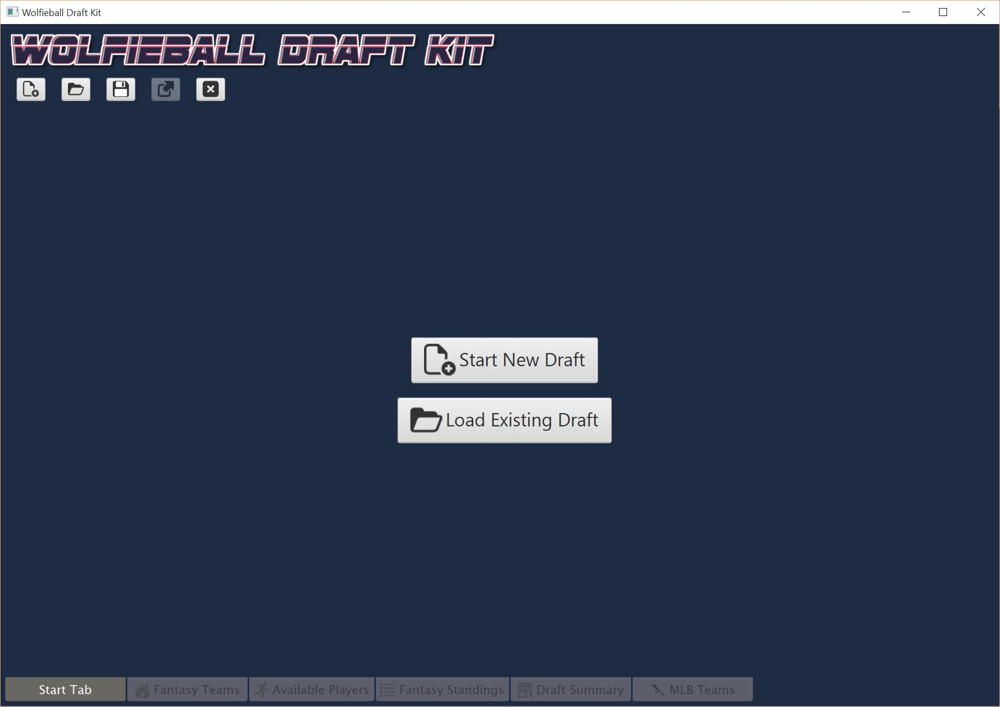
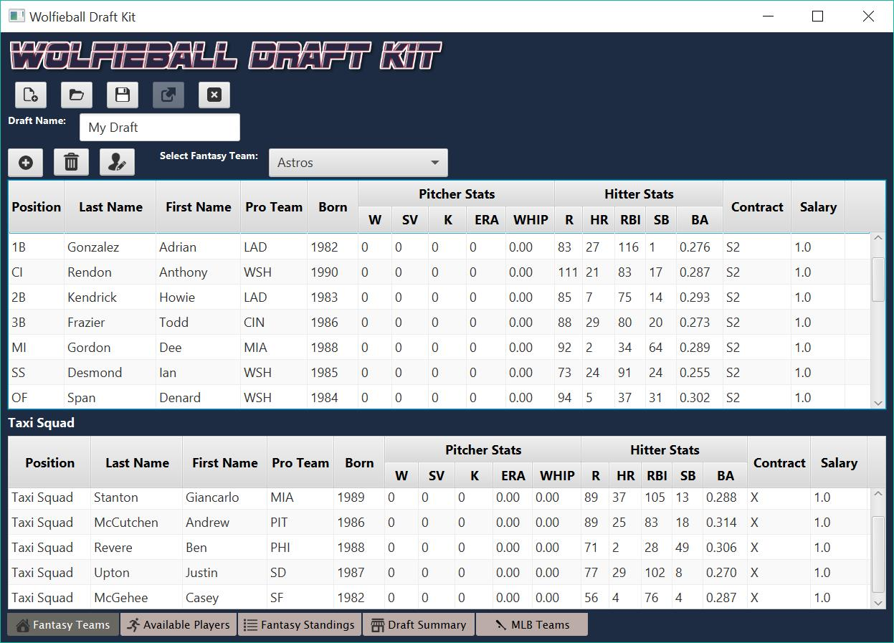
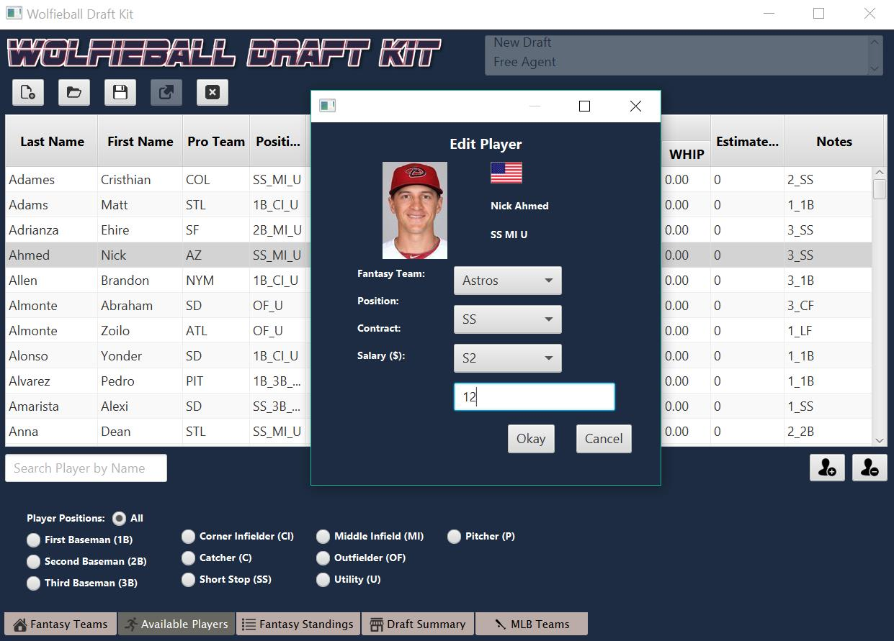
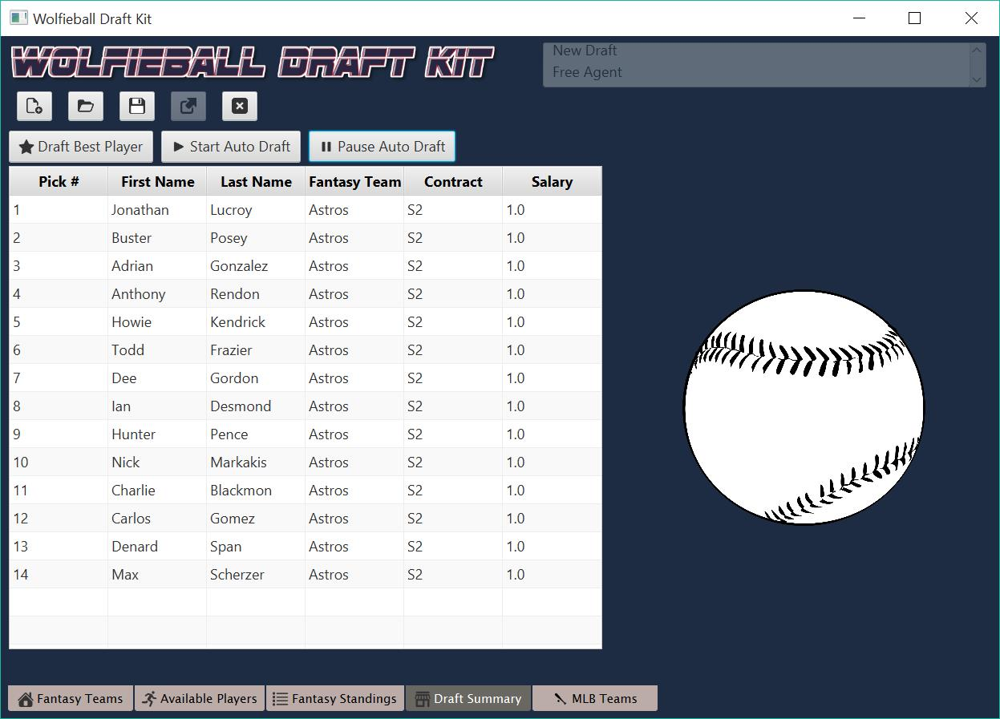

Fantasy Baseball
Striiiiiikkeee!! ⚾🏏
This Java-based desktop application was designed to take Major League Baseball data and load an easy to use UI to form fantasy baseball teams. The application provided users with a way to save their selections and view all sorts of statistics about the players. Most importantly the application used multi-threading to generate teams in the background while the user could still interact with the UI. My professor actually went on to use it as his personal fantasy baseball league manager. He won his league in 2017! It was 99.9% directly due to my great management tool. 😁
   